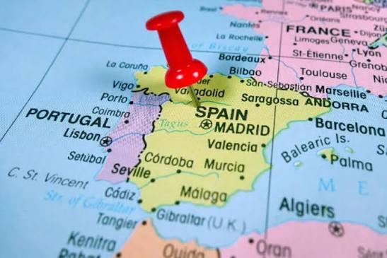

Guía turística
Descubre Pinto, de tu barrio al mundo
Esta guía te propone un recorrido en cuatro paradas, de lo más cercano a lo más amplio: el barrio donde se vive el día a día, el pueblo que lo rodea, el país al que pertenece y el instituto donde se aprende a conocerlos mejor. Cada parada tiene su propia página con información, datos y curiosidades.
¿Qué hay en cada página?
Nicolás Fúster
situado en la zona oeste de Pinto junto al barrio de La Cristina, es una tranquila área residencial articulada alrededor del extenso Parque Municipal Nicolás Fúster.

Pinto
es un municipio y localidad española perteneciente a la Comunidad de Madrid, situado a unos 20 km al sur de la capital.

España
España es un país soberano transcontinental ubicado en el suroeste de Europa, miembro de la Unión Europea y cuya capital es Madrid

IES Calderón de la Barca
Es uno de los Institutos de Innovación Tecnológica (IIT) de la Comunidad de Madrid, con fuerte integración de herramientas TIC y participación en proyectos internacionales como Erasmus+.
Tu recorrido
De tu barrio al mundo
De lo más cercano a lo más lejano. Elige una página y descubre de qué trata.
2 · Organiza la visita
Planificación e itinerario
Una propuesta de cuatro días ordenada por zonas para no dar vueltas de más.
Ruta día a día
Día 1 · Casco histórico (todo a pie)
- MañanaPlaza de la Constitución e iglesia de Santo Domingo de Silos.
- MediodíaTapas y comida en los bares del centro.
- TardeTorre de Éboli y paseo por el parque del Egido.
- NocheCena tranquila o función en el teatro municipal.
Día 2 · Parques y barrio (zona oeste)
- MañanaParque Juan Carlos I: paseo junto al lago y zonas verdes.
- MediodíaComida de menú del día.
- TardeBarrio y parque Nicolás Fúster, junto a La Cristina.
- NocheTerraza y cena sin prisa por el barrio.
Día 3 · Excursión a Aranjuez (tren hacia el sur)
- MañanaCercanías C-3 hasta Aranjuez y visita al Palacio Real.
- MediodíaComida en el centro de Aranjuez.
- TardePaseo por los jardines junto al río Tajo.
- NocheVuelta a Pinto en tren.
Día 4 · Madrid capital y despedida (tren hacia el norte)
- MañanaCercanías C-3 hasta Atocha y paseo por el Retiro.
- MediodíaBocadillo de calamares o menú en el centro.
- TardePuerta del Sol y Plaza Mayor a pie.
- FinalRegreso a Pinto y compras de última hora.
Imprescindibles y prioridades
- Torre de Éboli
- Plaza de la Constitución
- Iglesia de Santo Domingo de Silos
- Parque Juan Carlos I
- Parque Nicolás Fúster
- Parque del Egido
- Teatro municipal
- Parque Warner, en San Martín de la Vega
Tiempo libre e improvisación
Pinto se recorre sin prisa: deja libres la sobremesa y el final de la tarde de cada día para sentarte en una terraza, descansar en un parque o callejear por el centro sin rumbo fijo. El itinerario cabe de sobra y no hace falta madrugar.
Logística y servicios prácticos
Cómo llegar, dónde dormir y qué comer y comprar.
Transporte
Cómo llegar
- Tren: Cercanías C-3 desde Atocha, algo menos de media hora.
- Autobús: línea interurbana 421 desde Legazpi (Madrid).
- Coche: autovía A-4 dirección sur.
Cómo moverse
- A pie: el centro es llano y compacto.
- Autobuses urbanos entre barrios.
- Taxi para trayectos puntuales.
Alojamiento
-
Económico
Hostales y pensiones en el centro, cerca de la estación de Cercanías.
-
Medio
Hoteles junto a los accesos de la A-4, cómodos si vienes en coche.
-
Alternativa
Dormir en Madrid capital y visitar Pinto en una excursión de un día en tren.
Gastronomía y compras
Platos que probar
Dónde comer
Bares de tapas y restaurantes de menú del día en el entorno de la Plaza de la Constitución.
Dónde comprar
Comercio local en las calles del centro y el centro comercial Plaza Éboli para las grandes tiendas.